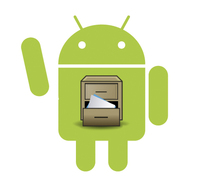
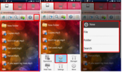
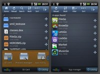
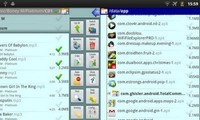
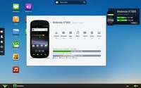
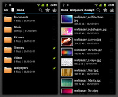
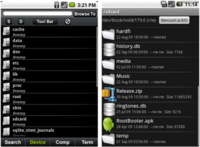
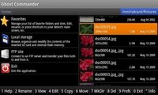
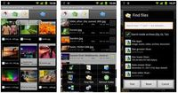

Una de las cosas buenas que tiene Android y que desgraciadamente no tienen otros sistemas es un acceso total a las tripas de nuestro teléfono. Es decir, podemos ver a nivel de archivos absolutamente todo. Eso nos proporciona control absoluto y lo que es mejor, que podemos gestionar todos estos archivos nosotros mismos. Para ello [...]
Una de las cosas buenas que tiene Android y que desgraciadamente no tienen otros sistemas es un acceso total a las tripas de nuestro teléfono. Es decir, podemos ver a nivel de archivos absolutamente todo. Eso nos proporciona control absoluto y lo que es mejor, que podemos gestionar todos estos archivos nosotros mismos.
Para ello necesitamos de una buena aplicación que nos facilite la faena, y para ello os vamos a dar 10 sugerencias entre las que seguro que encontraréis aquella que más os guste y os convenga. Porque hay para todos los gustos, oiga. Así que basándonos en la variedad que hay, y una preselección que los chicos de appstorm han hecho, vamos a ver estos auténticos monstruos de los archivos, ¡seguro que te gusta más de uno!
ES File Explorer
Uno de los más populares y que incluso algunas ROMS ya traen por defecto. De todas las opciones que pueda haber esta es de las más clásicas del Market. Un completo todo en uno donde podemos mover, copiar, eliminar archivos, hace funciones de FTP, enlazarlo con Dropbox, Sugarsync o Box.net, puedes acceder desde el pc e incluso transferir archivos por bluetooth. Una herramienta completa y encima compatible con las versiones más antiguas de Android (a partir de la 1.5). Una buena opción sin duda.
Descargal ES Explorer del Android Market
FileGo
Otra opción, quizá un poquito más sencilla y menos pretenciosa que ES File Explorer es FileGo. Sobretodo cabe destacar su interfaz cómoda y sencilla. Pero no nos dejemos llevar sólo por su “piel”, ya que también tiene todo lo que necesitamos para la gestión más común de archivos (eliminar, mover, copiar, cortar, etc..), gestionar aplicaciones o el común aunque ya no tan útil Task Killer. Una genial opción si buscamos la sencillez ante todo.
Descarga FileGo del Android Market
X-Plore File Manager
Si hay algo especial en esta aplicación es su interfaz visual. Intentando emular un explorador de Pc con su árbol de directorios, X-Plore File Manager nos trae una organización y textura parecida al explorador de toda la vida. Además de todas las prestaciones típicas de un gestor de archivos, con ella podremos visualizar el interior de los archivos zip, cosa bastante útil. Sin duda una opción curiosa.
Descarga X-Plore File Manager del Android Market
Airdroid
Ojo con esta aplicación porque a mi me ha dejado encantado la verdad. Muchas veces por una o otra casualidad, cuando intento acceder a los archivos de mi móvil no me es posible, o no tengo cable..Pues con Airdroid es facilísimo de solucionar. Si tienes tu pc enganchado a la misma Wifi que el móvil, con Airdroid podrás configurar en un periquete un sistema de gestión de archivos por web útil y muy vistoso. Y lo mejor de todo, funciona a las mil maravillas. 100% recomendado.

Descarga Airdroid del Android Market
Inka file manager
Muchas veces tenemos apps super potentes y que hacen mil maravillas pero realmente no necesitamos tantísimas funciones y se nos hace enrevesado usar algo tan recargado. Bueno, si es tu caso, Inka file manager es justo lo que buscas. Un gestor de archivos al 100% sin más aditivos ni funciones extra. Sencillez, robustez y una agradable interfaz gráfica para una aplicación que cumple con su cometido. Adaptada para Android 4.0.

Descarga Inka File Manager del Android Market
Root Explorer
Si tienes tu teléfono rooteado y eres de los que no quiere dejar ni un sólo detalle de su terminal al azar, Root explorer es la opción perfecta. No habrá carpeta que se te resista, además de funcionalidades extra como un editor de texto, creación y extracción de archivos zip o tar/gzip, extracción de archivos rar, selección múltiple, ejecución de scripts, búsquedas, remonta, permisos, marcadores, envío de archivos (por correo electrónico, bluetooth, etc.) miniaturas de imágenes. Y algunas otras más, vamos un imprescindible si eres un usuario Root super experto. Es la única que es de pago de la lista, como dice el autor de la misma, por algo será.

Descarga Root Explorer del Android Market
File Expert
Esta es otra de las aplicaciones “vitaminadas” con funciones de la nube. Podemos hacer toda la gestión de nuestros archivos como todas las demás pero también podemos enlazar nuestros servicios en la nube como dropbox, acceder a FTP’s y acceder cómodamente a la lista de aplicaciones y gestionarlas también. Es muy sencilla de usar y muy vistosa. Otra opción entre el mar de gestores de archivos.
Descargar File Expert del Android Market
Ghost Commander File manager
Con un entorno muy parecido a Total Commander, gestor clásico de archivos de Windows, este gestor de archivo es una auténtica locura. Pero en el buen sentido, se entiende. A diferencia de los gestores de archivos habituales, copia y mueve archivos entre sus dos paneles. Muchos usuarios consideran esta forma de trabajar más adecuada que los clásicos copiar y pegar estilo Explorer, pero ya se sabe que para gustos colores…Crea y extrae archivos ZIP, podemos descargar de FTP y todas esas prestaciones que hacen de Ghost Commander un completo gestor.

Descarga Ghost Commander File Manager del Android Market
Dual File Manager XT
Al igual que Ghost Commander, las funciones de este gestor de ficheros se hace en modo 2 pantallas. Es un modo muy “a la vieja escuela” porque es como se trabajaba con los gestores de archivos en pc antiguamente, y que a mucha gente le sigue resultando muy cómodo y a prueba de despistes. Desde luego es una interesante opción si queremos tener un gestor más visual. Soporta encriptación para archivos, soporte total de archivos zip, y hasta podemos ocultar archivos y carpetas. Muy completo y una buena opción para el usuario medio.

Descargar Dual File Manager XT del Android Market
Astro File Manager
Y aunque la lista no tiene un orden particular, yo personalmente he dejado Astro para el último lugar por ser el que uso habitualmente y el que más me gusta. Astro es el buque insignia de todos los gestores de archivos y lo uso desde que tengo el primer android. Para mi cumple sobradamente mis expectativas de lo que un gestor de archivos ha de ser, con algunos extra como backup de aplicaciones, editor de texto integrado, soporte para zips, etc. Desde luego, 20 millones de descargas no son casualidad.
Descarga ASTRO File Manager del Android Market
Y hasta aquí este particular repaso de los gestores de archivos, como hemos dichos hay de todo tipo y para todos los gustos y necesidades. Hay que probar y descartar para buscar el que más se adapte a nuestras necesidades. Así que no os van a faltar opciones. ¿Conocéis alguno que no aparece aquí? ¿Qué os gusta de un gestor de archivos?
Vía AppStorm
Seguramente también te interesará...
- La próxima versión de Android será Key Lime Pie: ¿Hacen falta de verdad tantas actualizaciones?
- Si Android no quiere morir tendrá que expandirse más allá del Smartphone
- Instala Android-x86 4.0 ICS en tu portátil paso a paso
- Apps Chorras y Rumores de la Semana [#Loquebienestábienacaba...]
- Juegos Android de la Semana: Acción y habilidad para el fin de semana
- Fandroide, lo mas Android de la Red: (XIX) ¡Especial MWC!
- ¿Qué era el Mobile World Congress antes de Android?
- Samsung Galaxy S3: El abanderado Android -Rumores, certezas y complejos-